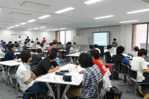
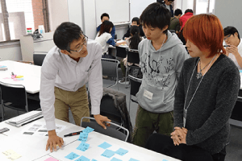
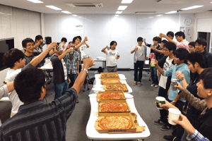

九州アプリチャレンジ・キャラバンについて
九州アプリチャレンジ・キャラバン（以下、チャレキャラ）は、一歩先ゆく実践的なプログラミングスキルや問題解決能力を身につけたいと感じている学生のためのアプリ開発イベントです。7月から順次開催されるイベントを通じてアプリの企画・開発を進め、最終ゴールである12月のコンテストを目指します。
期間中は現役エンジニアから構成されるメンターが、オンライン・オフラインでそれぞれの挑戦をバックアップ。学校のようなカリキュラムはありませんが、先に進みたいという情熱さえあれば、いくらでも学ぶことできる最高の環境を提供します。
エントリー時点で九州にある高等教育機関（大学・専門学校・高等専門学校など）のキャンパスに通う学生であれば、特に参加制限はありません。最優秀賞の賞金30万円を目指して突っ走るもよし、まずはオリジナルのアプリを作り上げることを目指すもよし、それぞれの想いをチャレキャラはサポートします。
目の前に現れる壁を1つずつクリアした先には、あなたの想像を越えた成長が待っています。
  スケジュール
説明会
6月より各協力教育機関で開催しています。詳しくは こちら
開発イベント
7月から順次開催しています。開発イベントへの参加は任意です。いつの時点からでもまた何回でも参加することができます。
-
- 2016/7/9
-
スタートアップ 1
チーム作りとスタートアップ企画
-
- 2016/7/16, 8/6
-
スタートアップ 2
開発環境整備と計画作り
-
- 2016/9/17
-
DevDay 1
プチ開発合宿で技術課題の棚卸と解決
-
- 2016/9/24
-
DevDay 2 - 大八耐
ハッカソンイベント大八耐と連動して集中開発
-
- 2016/10/8
-
DemoDay 中間発表会
これまでの開発内容の中間発表と振り返り
-
- 2016/10/22
-
DevDay 3 - UX
UXを学ぶワークショップとプチ開発合宿
-
- 2016/11/12
-
DevDay 4 - コード設計
コード設計を学ぶワークショップとプチ開発合宿
-
- 2016/11/26
-
DevDay 5 - プレゼン
プレゼンを学ぶワークショップとプチ開発合宿
開催場所: 福岡県Ruby・コンテンツ産業振興センター（福岡市博多区博多駅東1丁目17-1）
※イベントの日程・内容は変更になる場合があります。予めご了承ください。コンテスト
コンテストでは、プレゼンとデモンストレーションによる応募アプリの審査と優秀者表彰を行います。コンテストは一般公開します。
| 日時： | 2016/12/17（土） 13:00〜18:00 |
|---|---|
| 場所： | 福岡アジア美術館 あじびホール福岡市博多区下川端3-1 リバレインセンタービル8F |
| 表彰内容： | 最優秀賞（副賞30万円） 優秀賞（副賞5万円） 企業賞（副賞3万円） |
| 審査員： | 近日発表予定 |
協賛
イベントスポンサー
テーマスポンサー
ツール
| 主催： | 九州アプリチャレンジ・キャラバン2016 実行委員会 |
|---|---|
| 共催： | 福岡県Ruby・コンテンツビジネス振興会議 |
| 後援： | 福岡市 |
| 協力教育機関： |
|